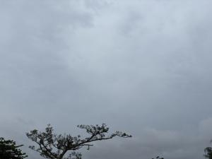
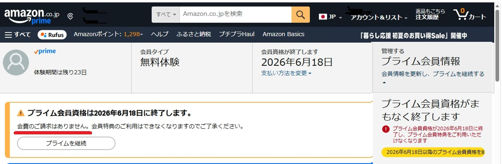

うるがいの話 ある日
最新: プライム会員特典の解除【うるがいの話 ある日】とは 一日だけのプログです
『うるがいの話』の最新一日だけのプログで、通信料が少なく経済的だ。カニの画像をクリックすると全ての日付が載る『うるがいの話』サイトを表示します
|
|
【うるがいの話】 うるがい(ｳﾙｶﾞｲ urugai)とは、『もずくがに』の名前でとても大きくなります。 |
|---|---|
|
|
【カミマヤーの話】 猫のことを方言でマヤーといいます。カミマヤー（kamimayaa）とは、神の猫のことです。 |
|
【たながぁの音楽】 たながぁ（ﾀﾅｶﾞｰ tanagaa）とは手長えびのことで、何種類かあり大きいのは車 エビぐらいになります。 |

|
【ぶながぁの話】 ぶながぁ(ﾌﾞﾅｶﾞｰ bunagaa)とは、赤い髪の毛、赤い身体、そして身長は１ｍ２０ｃｍ ぐらい、川の蟹を食べているの目撃された。場所は沖縄県国頭郡大宜味村のと ある村僕の隣近所に住んでいる爺さんから、聞いた話です。 |
|
|
【ギーマの話】 ギーマ(giima)とは、山原の里山に咲くスズランに似た、 花を付けます。実は食べられます、 気が付くと口の周りが紫になっています。 |
2026年05月26日 (火）プライム会員特典の解除
15:57

タイプＣの有線イヤホンを、アマゾンで注文したら、なぜかプラ
イム会員特典になっていた。商品は、本当に翌々日に届いたのだ
が、プライム会員特典にはなりたくない。昨日、特典の解約をし
たのが、気になってエアイとチャットする。
アマゾンである商品を、注文したら
なぜか配送料が無料になり、
そのあと、アマゾンプライム会員になりました。
とメールが届きました。
会員になるつもりが無いので
アマゾンプライムの解約手続きをしたら
!注意：会員資格を終了すると、
プライム会員特典に関連付けられたアイテムに影響があります。
配送特典
お届け済みの注文
とありますが、
注文した製品は既に受け取りました。
配送特典の５百円を
支払うことになるのでしょうか？
教えてもらった手順で確認すると、実は解約手続きは行われてい
なかった。あらためて、解約手続きを行った。

今回のケースは、Amazonでかなりよくある流れです。
商品注文時に、配送料無料の案内から無料体験に入っていた、と
いうパターンですね。
ウン、まるで人と会話しているようだ。